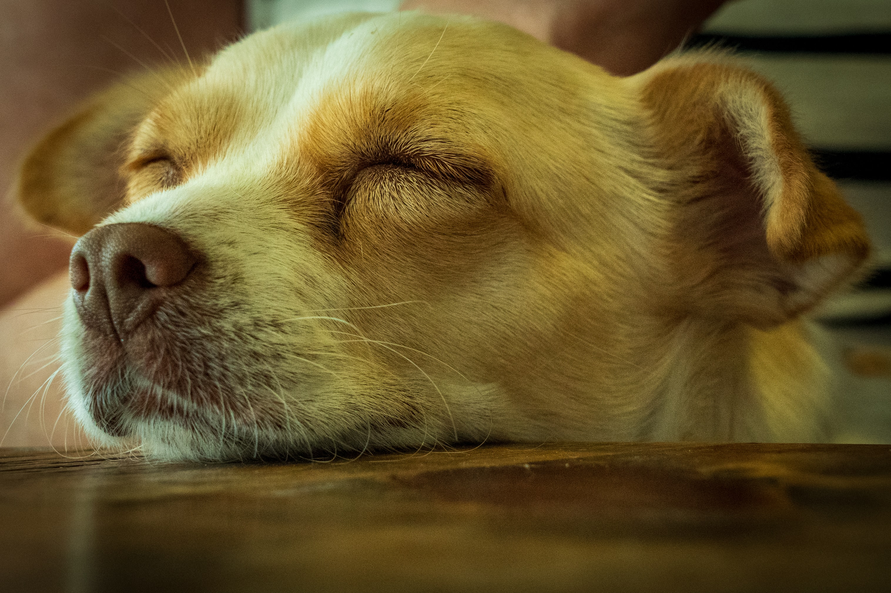

Who are we?
Greek Dogs was - and is - an idea that has just grown and grown - a network with the common desire to help the dogs you meet on your holiday in Greece - to do as much as we can to improve conditions for stray dogs, and limit their numbers.
Many forget the street dog who faithfully accompanied them an entire holiday because they showed it a bit of kindness. But we chose not to forget, not to accept the circumstances and not to give up. For more than 20 years, we have helped as many animals as we could, and limited the number of stray animals in the areas we work.
We count approx. 40 volunteers working with flea markets, sponsors, such as foster families or visiting teams, facilitators, coordinators, etc.
We have no expenses for administration, website or anything else, because it is our inalienable principle that everyone helps unpaid so every penny must go uncut to help the animals.
We are often subjected to harsh criticism because we choose to help animals in another country when there are animals in Denmark that need help. For us, there is no contradiction in helping both, and many of our adoption families have both Danish and Greek dogs.